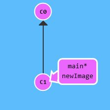

Git branch
Allgemeine Beschreibung zu diesem Befehl
Der Befehl "git branch " erstellt einen Zweig (branch) mit dem angegeben Namen an der Stelle an der man sich befindet (head). Wichtig hierbei ist, dass man erst zu dem gewollten Branch wechseln muss bevor man Änderungen vornehmen kann.
Git branch - best practices
• "Branch early and branch often" Es ist sinnvoll so viele branches wie möglich so früh wie möglich zu erstellen, um zu verhindern dass man im Nachhinein größere Teile der Arbeit nochmal abändern oder sogar löschen muss.
• lieber mehr branches als wenige Es ist besser mehrere branches zu haben, die auch logisch gesehen existieren sollten, als wenige große branches zu haben, die durch ihre Größe unübersichtlich werden.


Vom ersten Bild (links) zum zweiten Bild (rechts) ist der Unterschied, dass rechts ein neuer branch erstellt wurde, an der Stelle an der man sich gerade befunden hat. In diesem Fall der main branch.